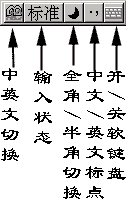

|
|
| 当前位置：电脑报电子版 > 1999 年 > 33 期 > 软件世界 > Win95/98输入法设置技巧 |
| 《 Win95/98输入法设置技巧 》 |
| 1．添加和删除输入法 现在很多共享和商业的输入法软件都有自动安装程序，能够自动安装，而卸载提供自动卸载程序，也有通过输入法的设置窗口来卸载的。Win95/98本身带有很多输入法，这些输入法的添加、卸载都是通过输入法的设置窗口进行的，方法很简单，点击“开始/设置/控制面板”，在打开的窗口中选择“输入法”，弹出输入法设置窗口，选择窗口中的“添加”按钮，就可以添加输入法，选择窗口输入法列表栏中的某个输入法，点击下面的“删除”按钮，即可删除该输入法。建议将不使用的输入法删除，节约系统资源。 2．设置输入法的属性 大多数输入法都可以设置它的使用功能，例如常用的设置项目有光标跟随、逐键提示、词语联想等项目。你可以根据自己的需要设置这些功能项目。可以在上面提到的输入法设置窗口中选择“属性”按钮设置。也可以启动某个输入法，在输入法的功能按钮图标上选择输入右键菜单中的“属性设置”项目，在弹出的窗口中设置。 3．全角和半角的切换 Win95/98输入法启动后，一般都有一个功能按钮条，这个功能按钮条可以设置许多输入方式，例如输入的标点符号、数字、英文字母，是全角（占两个普通英文字符位置）还是半角（占一个普通英文字符位置）。图示是智能输入法的功能按钮条。 4．快捷键 输入法的切换和功能转换都可以使用快捷键，下表是Win95/98中默认的输入法快捷键。你可以定义自己常用的输入法启动热键。先在控制面板中点击输入法，在弹出的窗口中选择“热键”标签，然后就可以自定义了。例如，你可以自定义智能ABC的启动热键为“Ctrl＋Alt＋0”。 5．调整输入法的次序 输入法在状态栏有一个图标，点击输入法图标就可以选择输入法。但排第一的图标可以用“Ctrl＋Space”热键启动，因此可以将自己常用的输入法排列到前面。以前《电脑报》介绍了用修改注册表的方法来设置。但也有一个简单的方法，就是先将最常用的输入法删除，再重新安装该输入法，最常用的输入法就安装在前面了。 6．大字符集汉字的输入 大字符集汉字是一种汉字扩展内码规范（GBK）中定义的汉字。使用这个汉字集有利于与港澳台交流，Win95中有五种输入法可以输入GBK汉字。但到了Win98，为了精简系统、优化性能，将GB和GBK两个汉字集的输入法进行了合并。除了区位码和智能ABC外，其他预装的输入法都有GB和GBK两种输入方式，它们在安装时，缺省是GB输入方式。如果要切换到GBK输入方式，可以在输入法的属性设置窗口，在右下角的“检索字符集”栏中选择“GBK”。 |
| 下载本期推荐软件 | 页 首 |
| 《电脑报》版权所有，电脑报网站编辑部设计制作发布 |